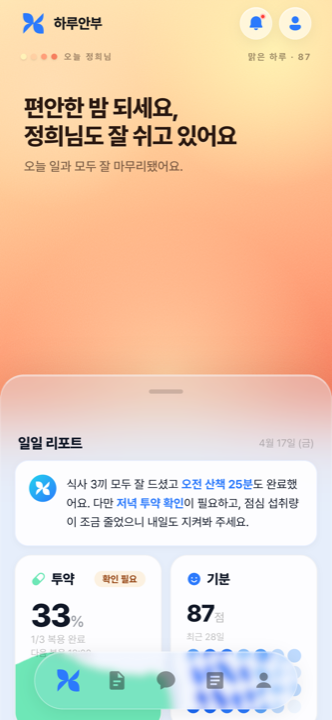
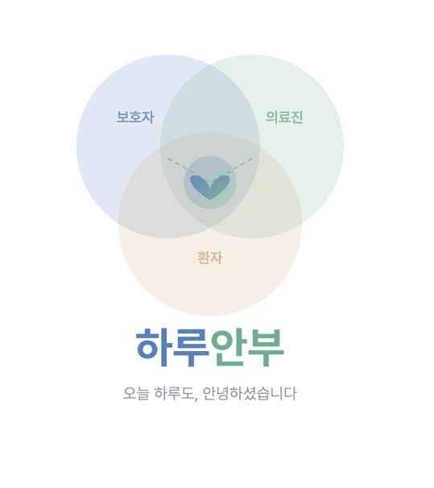
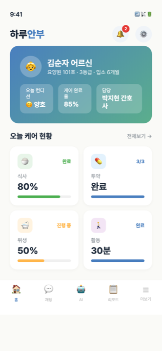
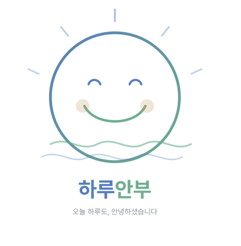
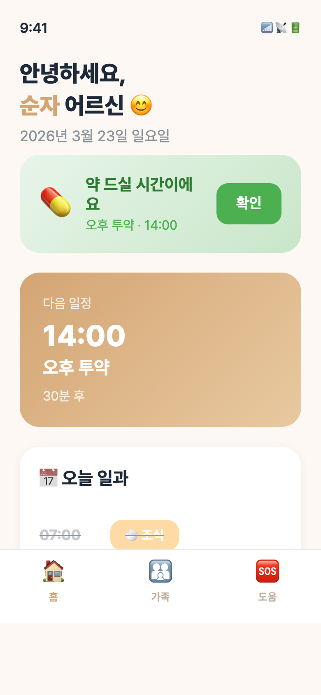
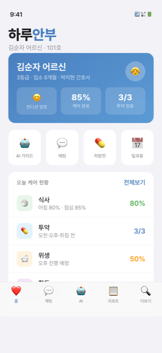
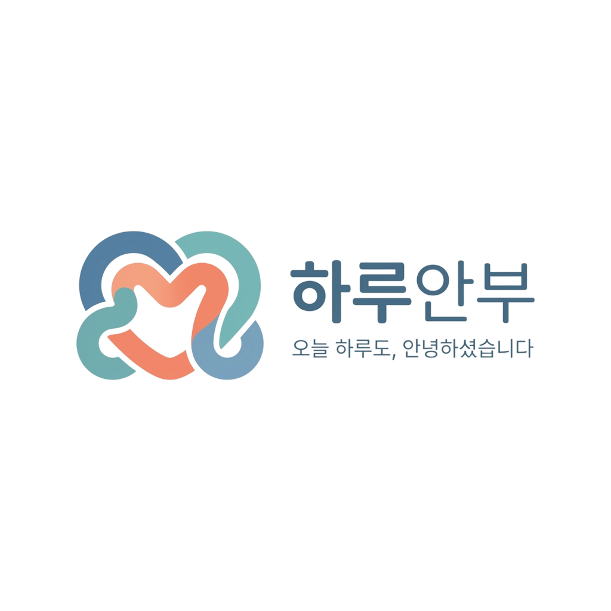
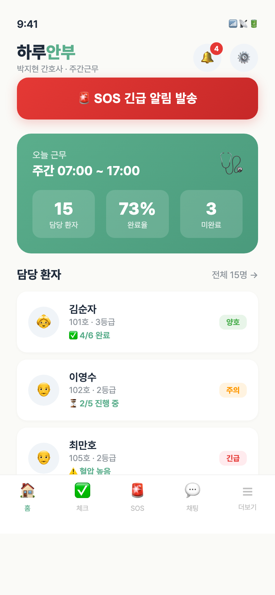
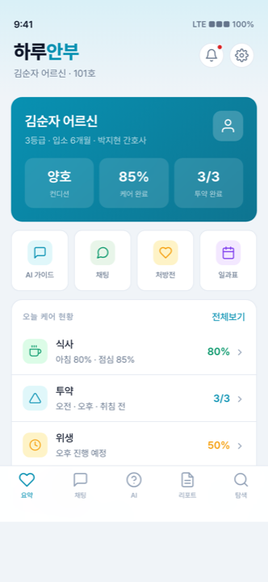

이 숫자 뒤에, 다섯 개의 앱이 있습니다.
한 줄 명령 뒤엔 수십 줄의 맥락이, 짧은 결과 뒤엔 수십 번의 합의가 있었다.
>"하던거 해봐라."
AI가 한 일 8단계 — 로그인 분기, 소셜 로그인, 역할 카드, 역할별 인트로, 동의 동적 주입, 프로필 자동 포맷, 슬라이드 버그 수정, v7 배경 적용. 짧은 명령이 가능했던 건 그 전까지 함께 쌓은 v7 톤·역할 구조·UX 원칙이 이미 그 한 줄 안에 들어 있었기 때문이다.
>"v7 시안. Apple Liquid Glass로."
Liquid Glass 한 줄로 시작했지만, AI 일일 리포트 카드 하나를 두고 수십 건의 피드백이 오갔다. 4열 → 2열 → 인라인 → 4칸 → 2×2 bento까지 — 우리가 매번 “이건 아냐”라고 잡았기 때문에 최종이 만들어졌다.

>"표에 들쑥날쑥 그래프 더미데이터 만들어줘."
>"왜 그대로냐?"
AI는 1차에 height % 값만 바꿨고 — 화면은 그대로였다. 우리가 한 줄로 잡자 AI가 원인을 자기 진단하고
구조 자체를 다시 짰다. 우리가 잘 다룬 협업은 정답을 받는 게 아니라, 틀린 답을 알아채는 일이다.
height: X% 값만 변경. 화면은 그대로. .trend-chart { align-items: flex-end } 때문에 자식 열에 height가 잡히지 않음.
align-items: stretch + .trend-col { height: 100% } 으로 컨테이너 구조 자체 수정. Y축 90만~120만 기준 % 재계산.
>"Korean hospital, doctor running."
>"301호 302호, 형광등, 백색 핸드레일."
>"@김미영 같은 AI 인플루언서 핸들로 캐스팅 고정."
>"렌즈·조명·카메라 워크. talking animatedly로 립싱크만."
1차는 미국식이었고, 2차는 한국식이었고, 3차는 인물이 일치했다. 우리가 매번 무엇을 더 정확히 요구해야 하는지 알아갔기 때문에 영상이 매번 더 좋아졌다.
'Korean hospital, doctor running.' 한 줄로. 미국식 인테리어가 나왔다.
'301호 302호, 형광등, 백색 핸드레일.' 한국 디테일을 박자 분위기가 살았다.
@김미영 같은 AI 인플루언서 핸들로 캐스팅 고정. 컷 사이 인물 일치.
AI가 만든 게 아니다.
AI를 잘 다룬 우리가
만든 것이다.
근데 자주 틀렸다.

로고 시도 01
보호자앱 v1
로고 시도 02
환자앱 초기
보호자앱 v2
로고 시도 03
의료진웹 초기
보호자앱 v4렌즈·조명·카메라 워크. ‘talking animatedly'로 립싱크만. 한국어 더빙은 후처리.
하루안부.
MAKING OF
하루안부.
김지욱
손예찬
고해은